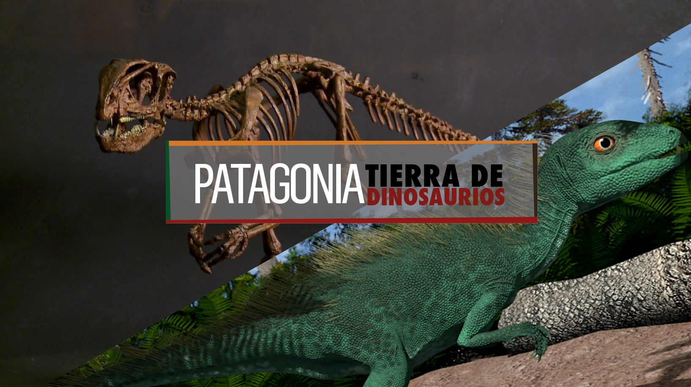

Nuestro país y particularmente la patagonia se ha convertido en un paraíso paleontológico. En sus yacimientos fósiles se han encontrado restos de siete especies de dinos, incluyendo el más antiguo del mundo "El Euroraptor".

La provincia Argentina "Neuquén" cuenta con la colección paleontológica más importante de Sudamérica y experimenta un auge de museos sobre la temática.
Un paisaje marciano. Un desierto rojizo de sierras y mesetas junto a un lago que se esfuma en el horizonte. Dinosaurios. Restos de ellos por todas partes. Fósiles de todos los tipos de vida que existieron en la Tierra hace millones de años. Un ecosistema completo petrificado.
En el camino hacia ese pasado se cruzan, veloces, zorros y ñandúes. Velan por los viajeros los santos paganos en improvisados altares de palos y piedras repletos de ofrendas y escupen fuego en el medio de la nada las imponentes instalaciones de extracción de gas y petróleo. Por momentos parece el paisaje de la película Mad Max. Este es el aspecto de la zona del lago Los Barreales, en Neuquén, en la Patagonia argentina, una provincia en el límite con Chile, a más de 980 kilómetros de la ciudad de Buenos Aires. El símil cinematográfico tiene sentido al considerar que hace 100 millones de años Argentina y Namibia (escenario del film) eran parte de un mismo continente.
ANÍMATE A PROGRAMAR
Las huellas del pasado aparecen a cada paso en la región que guarda la mayor colección paleontológica de Sudamérica. Allí existe una ventana al pasado cretácico que puede visitarse todo el año, aunque se recomienda hacerlo durante el verano argentino, en enero y febrero, cuando el clima cálido del sur propicia el turismo al aire libre. Esa ventana se llama Proyecto Dino, a 90 kilómetros de la capital homónima de Neuquén. Un campamento científico abierto al público con el apoyo de fondos públicos y privados (Universidad Nacional del Comahue y petroleras) que acaba de levantar sus persianas luego de cinco años de cierre por conflictos con la comunidad indígena y de financiación. Aquí se han hallado más de treinta tipos nuevos de dinosaurios, con 1.500 piezas de fósiles de vertebrados y más de 400 restos de vegetales de entre 90 y 100 millones de años de antigüedad. Y siguen encontrándose.

 ANÍMATE A PROGRAMAR
ANÍMATE A PROGRAMAR